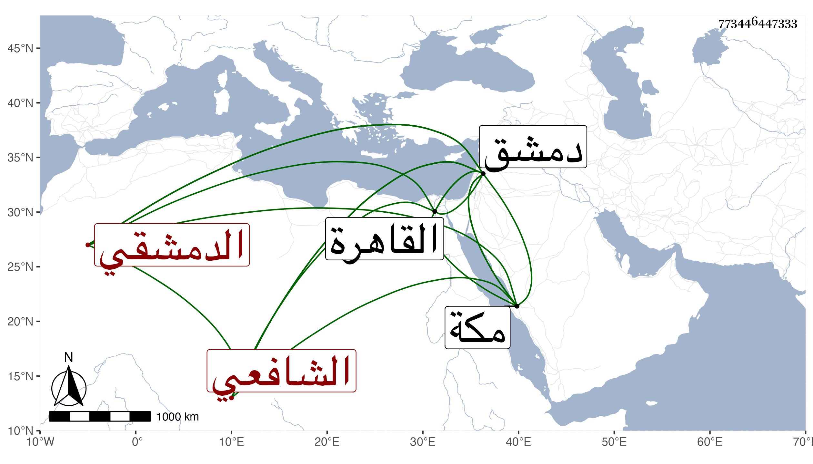

0902Sakhawi.DawLamic.ITO20230111-ara1.EIS1600.773446447333
Biography ID: 773446447333
528
أحمد بن محمد بن محمد بن محمد بن محمد بن محمد بن محمد بن محمد بن محمد ابن محمد الشهاب الدمشقي الشافعي أخو الأمين محمد الآتي ويعرف بابن الأخصاصي . ولد في سنة ثمان عشرة وثمانمائة بدمشق ونشأ بها فحفظ القرآن وقرأ في الفقه على التقي بن قاضي شهبة ورثاه بعد موته وسمع على ابن ناصر الدين ، ارتحل فقرأ على شيخنا شرح النخبة له بحثا وأذن له وكتب بخطه أشياء كالبخاري وشرحه لشيخنا وعمل في الوعظ حادي الأسرار إلى دار القرار اشتمل على مائتين وخمسين مجلسا في عشرة أسفار وكذا شرح مختصر أبي شجاع في الفقه حرره مع الشمس المسيري في بعض مجاوراته وخلف أخاه في مشيخة زاويته بدمشق وكثر اجتماعه معي بالقاهرة ثم بمكة في المجاورة الثالثة وسمعت من نظمه وفوائده وحصل بعض تصانيفي وكان الغالب عليه الخير والانجماع وسلامة الصدر والتواضع والتودد والرغبة في الصالحين وجمعهم على الطعام . مات في رجل سنة تسع وثمانين بدمشق رحمه الله وإيانا .
